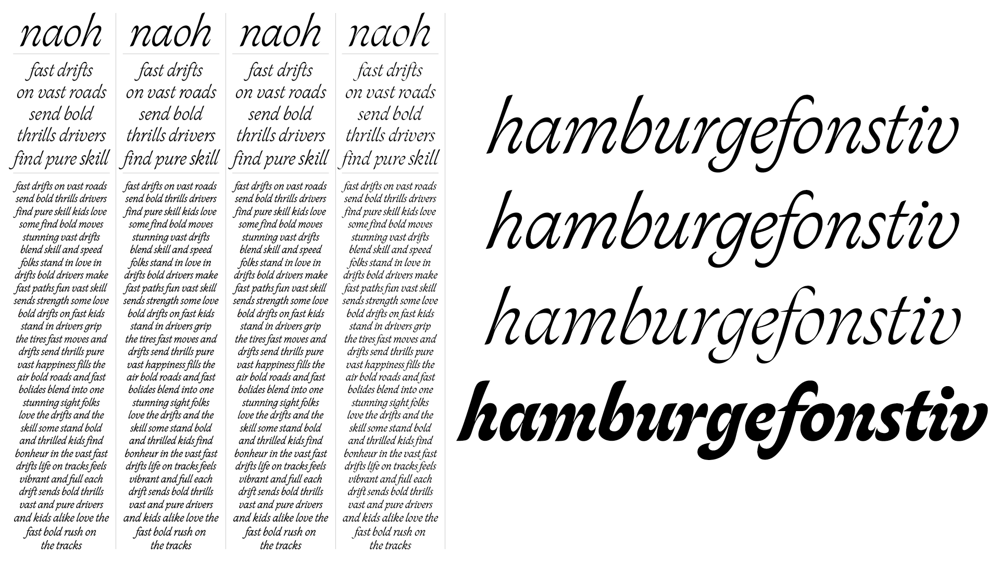
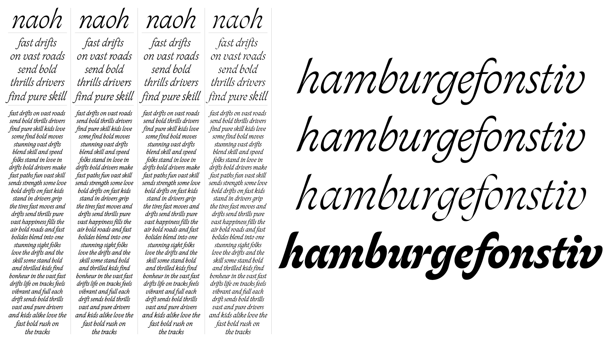

About
Benjamin Rouzaud is a French type designer and calligrapher. He previously studied graphic design and typography in Paris at École Duperré and École Estienne. Alongside his work as a freelance designer he developed an analogue practice of calligraphy which he now merges with digital tools to explore the expressive potential of writing systems. He focuses on the interaction between written and spoken language with particular attention to form and formatting in relation to cultural identity, contemporary art and education.
Skeed is an exploration rooted in the use of a simple ballpoint pen where Benjamin embraced physicality and intuition to uncover unexpected letterforms shaped by movement and sensation. Throughout the programme, he engaged in writing exercises to navigate the balance between formal/informal structures. This process marked a shift from a purely instinctive calligraphic practice to a more methodical design approach revealing a fundamental tension between the practice of the hand and the practice of digital design.


 
